In the first case the direct computation and Hilbert function testing is performed, in the second one the rings
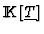
,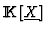
are constructed, the polynomials converted and the monomials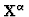
taken, for the computation of the Hilbert functions to be compared, while the ``coefficients"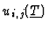
play their role in cutting the condition tree (when they are constant) and in the final simplification of obtained conditions. The code is currently being expanded to obtain a clean and clear output, and to make the whole analysis completely automatic.
Next it is shown how the performed implementation works over the
homogeneous polynomial system of equations coming from
the modelling of a neural network. In this case there is only one parameter
c and four unknowns u,v,w,t:
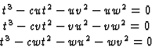
{5,
{N, {c, u,v,w,t}},
{C, {0, 1,1,1,1}},
{V, {0, 1,1,1,1}},
{C, {1, 0,0,0,1}}
}
{
{1t3, -1cut2, -1uv2, -1uw2}
,
{1t3, -1cvt2, -1vu2, -1vw2}
,
{1t3, -1cwt2, -1wu2, -1wv2}
}
{-1}
In this example the current implementation returns that, for any c such that 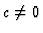
, the ``generic" Gröbner Basis specializes well. Next example is more complicated (see [10]) and it was already used in section 3. It contains four parameters (a, b, c and d) and four unknowns (x, y, z and t):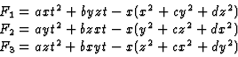
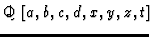
) contains 23 polynomials and the computation, which is to be shown below, provided in less than 1 second (including the Gröbner Basis computation) the following good conditions for specialization (which are later further simplified):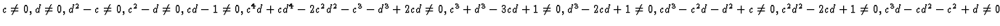
.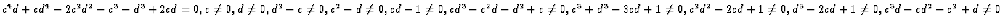
.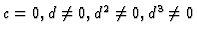
.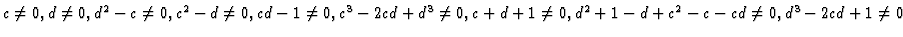
.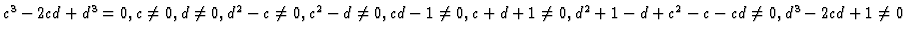
.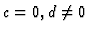
.
frisco% ./paramCond test.in
Homogenous system.
File : test.in
Initial basis:
{
-(x^3 + c*x*y^2 + d*x*z^2 - b*y*z*t - a*x*t^2),
-(d*x^2*y + y^3 + c*y*z^2 - b*x*z*t - a*y*t^2),
-(c*x^2*z + d*y^2*z + z^3 - b*x*y*t - a*z*t^2)
}
GroebnerBasis is :
{
c*x^2*z + d*y^2*z + z^3 - b*x*y*t - a*z*t^2,
d*x^2*y + y^3 + c*y*z^2 - b*x*z*t - a*y*t^2,
............................................
............................................,
x^2*z^5 - c^2*d*y^2*z^5 + d^2*y^2*z^5 + c*y^2*z^5
- c*d^2*z^7 + 2*d*z^7 - b*d^2*x*y*z^4*t
+ b*c*x*y*z^4*t - b*d*x*y*z^4*t + a*d*x^2*z^3*t^2
- 2*a*x^2*z^3*t^2 + a*c^2*d*y^2*z^3*t^2
+ a*c*d*y^2*z^3*t^2 - a*d^2*y^2*z^3*t^2
- b^2*y^2*z^3*t^2 - 2*a*c*y^2*z^3*t^2
+ a*c*d^2*z^5*t^2 + b^2*d*z^5*t^2 + a*c*d*z^5*t^2
+ a*d^2*z^5*t^2 - 4*a*d*z^5*t^2 - a*z^5*t^2
+ a*b*d^2*x*y*z^2*t^3 - a*b*c*x*y*z^2*t^3
+ a*b*d*x*y*z^2*t^3 - a^2*d*x^2*z*t^4
+ a^2*x^2*z*t^4 - a^2*c*d*y^2*z*t^4
+ a*b^2*y^2*z*t^4 + a^2*c*y^2*z*t^4
- a*b^2*d*z^3*t^4 - a^2*c*d*z^3*t^4
- a^2*d^2*z^3*t^4 + a^2*d*z^3*t^4 + 2*a^2*z^3*t^4
+ a^3*d*z*t^6 - a^3*z*t^6
}
Next, the user is asked if he wants to compute the good conditions for
specialization (our case) or to check a particular set of values.
Then, for every polynomial in the Grobner Basis already computed, it
is performed the separation between the
What do you want to use ?
1) isGoodSpecialization 2) conditions
Make your choice : 2
Phase 2: testing conditions. list length = 23
lengths = [5 5 5 5 5 5 7 9 9 9 11 8 9
9 11 9 10 10 11 13 11 10 12]
varList = {
{ x^2*z, y^2*z, z^3, x*y*t, z*t^2},
{ x^2*y, y^3, y*z^2, x*z*t, y*t^2},
.........................................
.........................................,
{ x^2*z^5, y^2*z^5, z^7, x*y*z^4*t, x^2*z^3*t^2,
y^2*z^3*t^2, z^5*t^2, x*y*z^2*t^3, x^2*z*t^4,
y^2*z*t^4, z^3*t^4, z*t^6}
}
parList = {
{ c, d, 1, - b, - a},
{ d, 1, c, - b, - a},
.........................................,
{ 1, - c^2*d + d^2 + c, - c*d^2 + 2*d,
- b*d^2 + b*c - b*d, a*d - 2*a,
a*c^2*d + a*c*d - a*d^2 - b^2 - 2*a*c,
a*c*d^2 + b^2*d + a*c*d + a*d^2 - 4*a*d - a,
a*b*d^2 - a*b*c + a*b*d, - a^2*d + a^2,
- a^2*c*d + a*b^2 + a^2*c,
- a*b^2*d - a^2*c*d - a^2*d^2 + a^2*d + 2*a^2,
a^3*d - a^3}
}
Now the algorithm presented in section 2 is applied: the different
Hilbert Functions arising after specializations are compared with the
generic Hilbert Function. The final result is the set of maximal
elements of the set 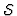
introduced in the subsection 2.1. After lemma 1, all the lists (called below list of exploded indexes) smaller than those which are maximal give the set of good specialization conditions.
originalHFunction = {1,0,0,-3,0,0,3,0,0,-1}
Result : list of indexes.
[0, 0, 0, 0, 0, 0, 1, 0, 0, 1, 0, 0, 0, 0, 0, 0, 0, 0, 0, 0, 0, 0, 0] [0, 0, 0, 0, 2, 2, 2, 0, 0, 1, 0, 0, 0, 0, 0, 0, 0, 0, 0, 0, 0, 0, 0] [0, 0, 0, 1, 2, 0, 0, 0, 0, 1, 0, 0, 0, 0, 0, 0, 0, 0, 0, 0, 0, 0, 0] [0, 0, 0, 0, 0, 0, 1, 0, 0, 1, 0, 0, 0, 0, 0, 0, 0, 0, 0, 0, 0, 0, 0] [0, 0, 0, 0, 2, 0, 2, 0, 0, 1, 0, 0, 0, 0, 0, 0, 0, 0, 0, 0, 0, 0, 0] [1, 0, 0, 0, 0, 0, 0, 0, 0, 1, 0, 0, 0, 0, 0, 0, 0, 0, 0, 0, 0, 0, 0]
Result : list of ``exploded'' indexes.
[0, 0, 0, 0, 0, 0, 0, 0, 0, 0, 0, 0, 0, 0, 0, 0, 0, 0, 0, 0, 0, 0, 0] [0, 0, 0, 0, 0, 0, 0, 0, 0, 1, 0, 0, 0, 0, 0, 0, 0, 0, 0, 0, 0, 0, 0] [0, 0, 0, 0, 0, 0, 1, 0, 0, 0, 0, 0, 0, 0, 0, 0, 0, 0, 0, 0, 0, 0, 0] [0, 0, 0, 0, 0, 0, 1, 0, 0, 1, 0, 0, 0, 0, 0, 0, 0, 0, 0, 0, 0, 0, 0] [0, 0, 0, 0, 0, 0, 2, 0, 0, 0, 0, 0, 0, 0, 0, 0, 0, 0, 0, 0, 0, 0, 0] [0, 0, 0, 0, 0, 0, 2, 0, 0, 1, 0, 0, 0, 0, 0, 0, 0, 0, 0, 0, 0, 0, 0] ..................................................................... [1, 0, 0, 0, 0, 0, 0, 0, 0, 0, 0, 0, 0, 0, 0, 0, 0, 0, 0, 0, 0, 0, 0] [1, 0, 0, 0, 0, 0, 0, 0, 0, 1, 0, 0, 0, 0, 0, 0, 0, 0, 0, 0, 0, 0, 0]
Finally, after a initial simplification, three conditions are obtained. Every condition has two parts: the first correspond to ``=0" conditions and the second to ``
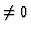
" conditions.
Result : list of ``simplified'' conditions.
( { 0 }
{ c, d, d^2 - c, c^2 - d, c*d - 1, c^4*d + c*d^4
- 2*c^2*d^2 - c^3 - d^3 + 2*c*d, c^3 + d^3
- 3*c*d + 1, d^3 - 2*c*d + 1, c*d^3 - c^2*d
- d^2 + c, c^2*d^2 - 2*c*d + 1, c^3*d - c*d^2
- c^2 + d },
{ c^4*d + c*d^4 - 2*c^2*d^2 - c^3 - d^3 + 2*c*d}
{ c, d, d^2 - c, c^2 - d, c*d - 1, c*d^3 - c^2*d
- d^2 + c, c^3 + d^3 - 3*c*d + 1,
c^2*d^2 - 2*c*d + 1, d^3 - 2*c*d + 1, c^3*d
- c*d^2 - c^2 + d },
{ c }
{ d, d^2, d^3 }
)
A more complicated example is the one defined by the following
homogeneous polynomial system of equations (where m is the only
parameter):
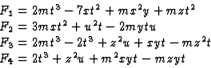
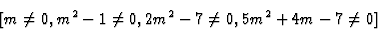